Cor e forma identificam o efeito. O valor fica no centro.
Acerto do ataque +1acerto_plus1Acerto do ataque −1acerto_minus1
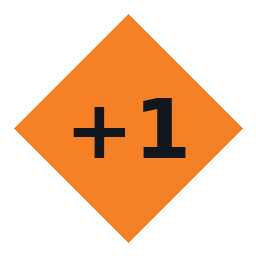
Dano causado +1dano_plus1
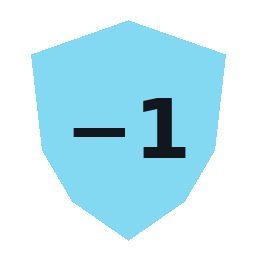
Redução de dano recebido −1reducao_dano_minus1
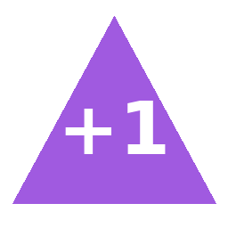
Teste de fuga +1fuga_plus1
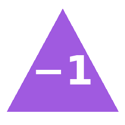
Teste de fuga −1fuga_minus1
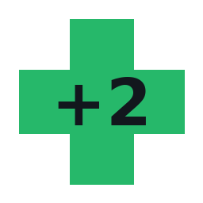
Recuperação de Integridade +2vida_plus2
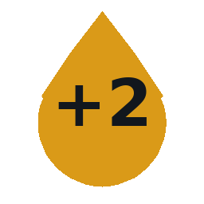
Combustível no tanque +2combustivel_plus2
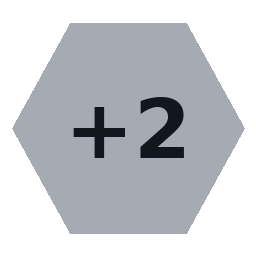
Sucata recebida +2sucata_plus2
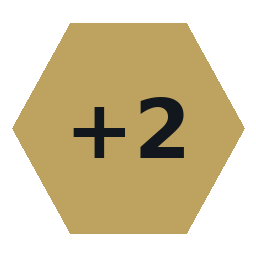
Munição recebida ou gasta +2municao_plus2Pneu recebido +1pneu_plus1Bateria recebida +1bateria_plus1
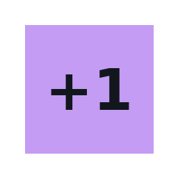
Compra de melhoria +1compra_plus1Consultar topo do baralho ?inspecao_symbolBloqueio de estrada ×bloqueio_xRemover bloqueio ✓desbloqueio_okDado de saque do atacante +1saque_ataque_plus1Dado de saque da defesa +1saque_defesa_plus1
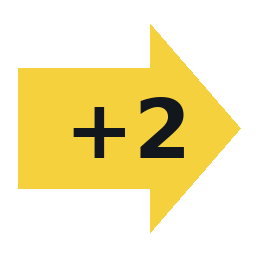
Posição ou avanço na corrida +2corrida_plus2
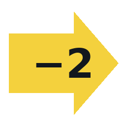
Posição ou avanço na corrida −2corrida_minus2
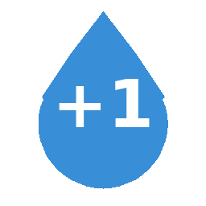
Água recebida +1agua_plus1
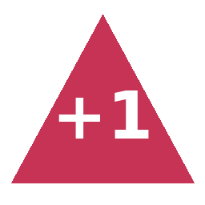
Ataque adicional +1ataque_extra_plus1Dano causado 1dano_1Munição recebida ou gasta −1municao_minus1
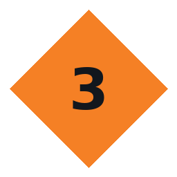
Dano causado 3dano_3Carga ocupada por equipamento 2peso_2
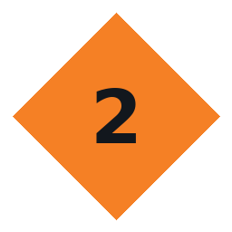
Dano causado 2dano_2Defesa +1defesa_plus1Carga ocupada por equipamento 1peso_1
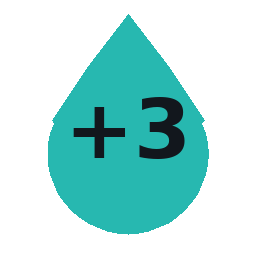
Capacidade do tanque +3tanque_max_plus3Capacidade de carga +2carga_max_plus2Transferir sucata para depósito 1transferir_1
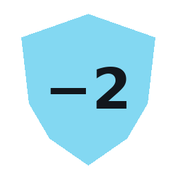
Redução de dano recebido −2reducao_dano_minus2
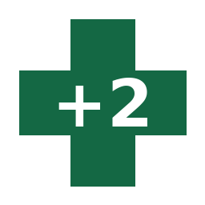
Integridade máxima +2vida_max_plus2Capacidade do depósito +5deposito_max_plus5Limite de recursos levados no saque 1cofre_1Substituição de melhoria ↻substituir_swapBônus de reparo Administrar +1reparo_bonus_plus1
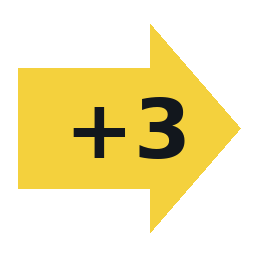
Posição ou avanço na corrida +3corrida_plus3
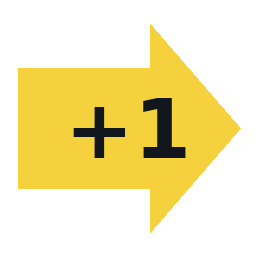
Posição ou avanço na corrida +1corrida_plus1Posição ou avanço na corrida −1corrida_minus1Sem efeito ∅neutro_noneRecuperação de Integridade +1vida_plus1
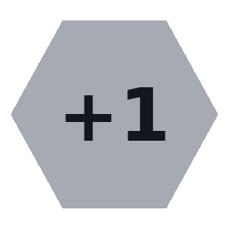
Sucata recebida +1sucata_plus1
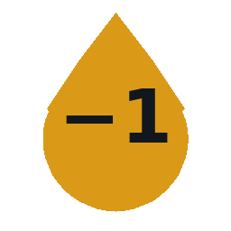
Combustível no tanque −1combustivel_minus1
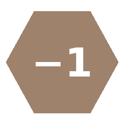
Recurso genérico ganho ou perdido −1recurso_minus1Munição recebida ou gasta +1municao_plus1Ação principal consumida −1acao_minus1
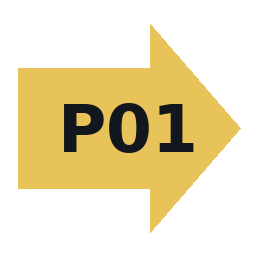
Convocação de corrida P01convocar_P01
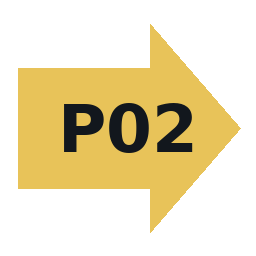
Convocação de corrida P02convocar_P02
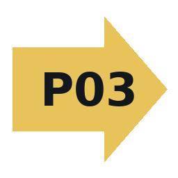
Convocação de corrida P03convocar_P03Combate de evento !emboscada_alertVeículo disponível +1veiculo_plus1Dano extra no 6 natural que acerta +1incendio_plus1